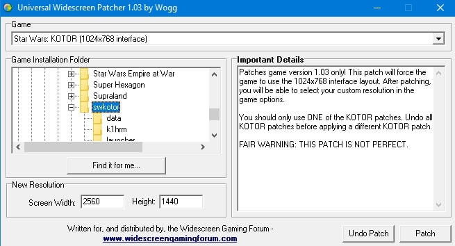
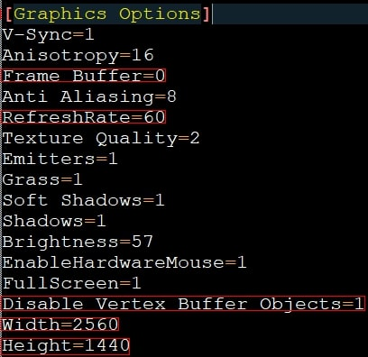
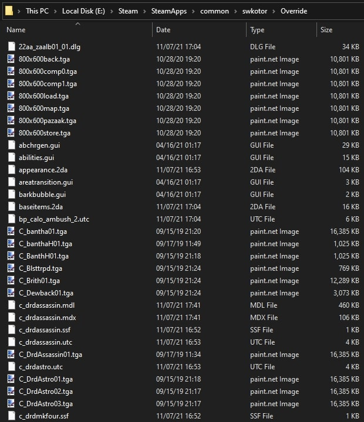
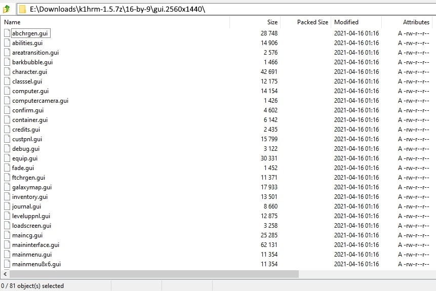
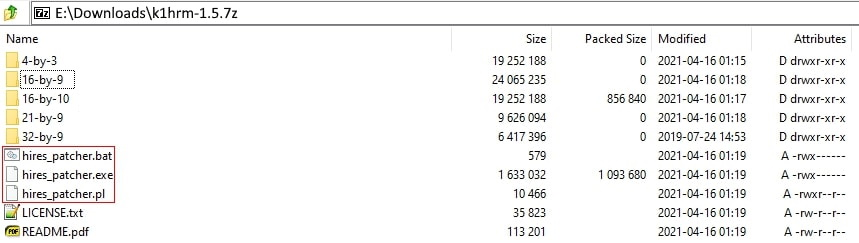

Last updated 05/16/2026
ATTENTION: This guide involves my own personal methods for installing and using mods with KOTOR. Like all modding, you are responsible for doing your own research to determine the best methods for modding your game. I provide no warranty and take no liability or responsibility for any issues that arise due to the contents of this guide. Please note that this guide is written with the Steam release in mind, though it may also work with the GOG or CD-ROM releases.





For additional mods beyond this guide, follow the mod build guides at the KOTOR Community Portal:
These comprehensive build guides provide additional options for expanding your modded KOTOR experience.